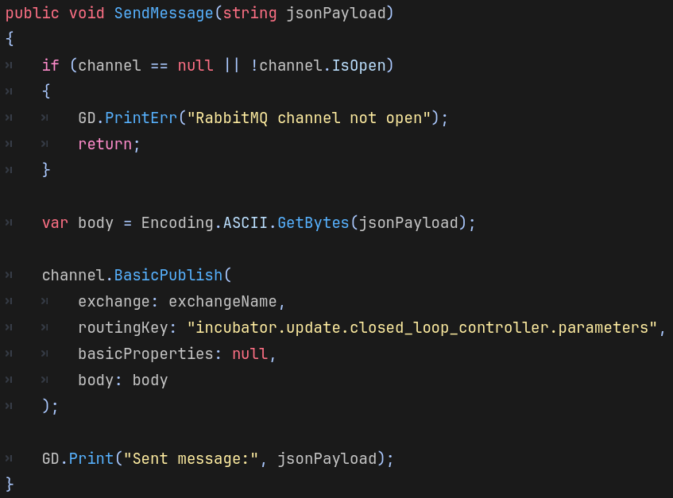
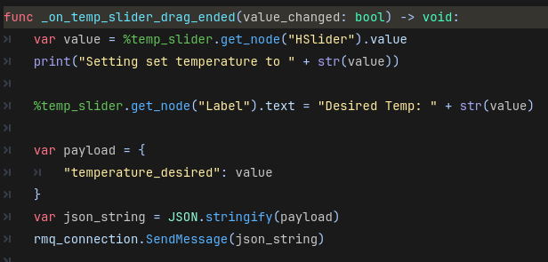
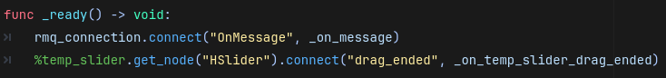
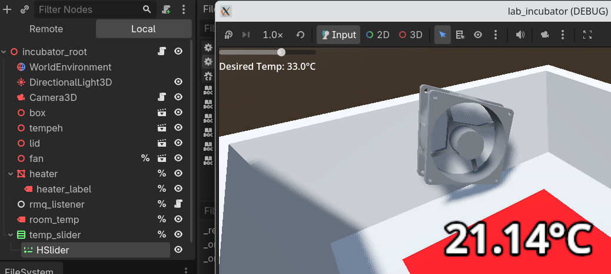

4-IncubatorTwin
This tutorial will set-up a UI to control the desired temperature in the incubator, and send this message using RabbitMQ. We will have the following steps:- Add SendMessage function
- Add UI
- Connect UI to function
a. Add SendMessage function
- 1. In the 'RabbitMQListener.cs' file, add the following function.
- It can go anywhere in the file, just not inside another function.
- This function takes some JSON, and sends it with a routing key that the incubator controller listens to.
public void SendMessage(string jsonPayload)
{
if (channel == null || !channel.IsOpen)
{
GD.PrintErr("RabbitMQ channel not open");
return;
}
var body = Encoding.ASCII.GetBytes(jsonPayload);
channel.BasicPublish(
exchange: exchangeName,
routingKey: "incubator.update.closed_loop_controller.parameters",
basicProperties: null,
body: body
);
GD.Print("Sent message:", jsonPayload);
}

b. Build the UI
In this step, we'll build up the UI so that we can provide interaction for the user on the incubator's desired temperature.- 2. Click on the '3d' tab at the top of the window so that you are looking at the incubator scene.
- 3. Create a new node in the scene tree by right-clicking the incubator node at the top of the pane on the left. Find the 'VBoxContainer' type, which is rows of rectangles.
- A 'VBoxContainer' will store UI elements vertically in rows.
- 4. Right-click this new node, and rename it to 'temp_slider'. Right-click again, and select 'Access as unique name'.
- 5. Right-click this 'temp_slider' node, and add an 'HSlider' node.
- 6. Right-click this 'temp_slider' node, and add a 'Label' node.
- These UI nodes should look like this. The 'temp_slider' should be a child of the 'incubator_root' node.
- 7. Click on the label. In the Inspector (on the right), set the text to be 'Desired Temp'.
- 8. Click on the slider. In the Inspector (on the right), set the max value and step to match the below figure.
- If you run the project, the UI should look something like this:
- So we have a slider for controlling the desired temperature within the incubator.
- Of course, feel free to make a better UI if you want.
c. Connect the UI to send a RabbitMQ message
The last step is to connect these UI elements to the RabbitMQ code.- 9. Edit the 'incubator.gd' script, by finding it in the files in the bottom-left, or clicking on the script icon beside the 'incubator_root' node.
- 10. At the bottom of this file, add this code.
func _on_temp_slider_drag_ended(value_changed: bool) -> void:
var value = %temp_slider.get_node("HSlider").value
print("Setting set temperature to " + str(value))
%temp_slider.get_node("Label").text = "Desired Temp: " + str(value) + "°C"
var payload = {
"temperature_desired": value
}
var json_string = JSON.stringify(payload)
rmq_connection.SendMessage(json_string)

- Explanation of code:
- We get the 'value' by finding the 'temp_slider' node, then getting the 'HSlider' child, then getting the actual 'value' set on that slider.
- We set the text of the 'Label' child.
- We then construct a dictionary, convert it to JSON, and pass it to the 'SendMessage' function.
- 11. Finally, in the '_ready()' function of the 'incubator_root' script, add this line:
%temp_slider.get_node("HSlider").connect("drag_ended", _on_temp_slider_drag_ended)

- Explanation: We first find the 'temp_slider' node (with the unique name). Then we find the child node named 'HSlider'. Then we connect the 'drag_ended' signal on the HSlider, to the '_on_temp_slider_drag_ended' function.
- Further explanation: This means whenever the user drags the slider, we will call the function.
That's it! Test it, and whenever the slider is dragged, the incubator should be set to the desired temperature. You can see the heater turn on and off depending on the actual temperature. Note that the incubator controller is hard-coded to not accept a desired temperature above 45 degrees.
d. Conclusion
Below is how this project looks at the end of this lab. Again, feel free to make your own modifications.
- We now have a Digital Twin of the incubator! We can control it with Godot by sending RabbitMQ messages, which can be read by both the simulated version and the real physical incubator.